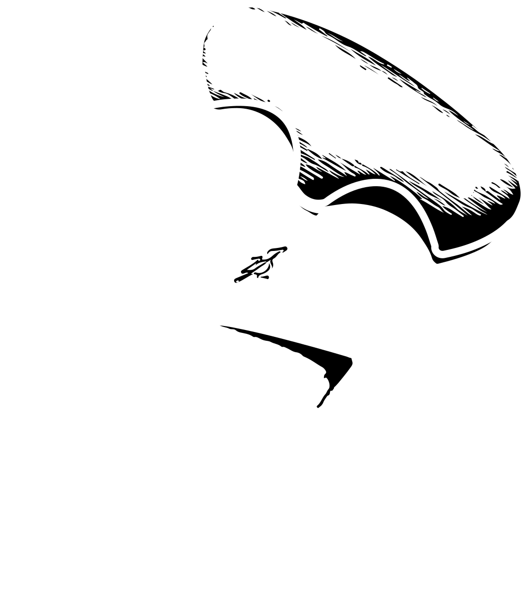

<header class="header" id="header">
  <nav class="nav container">
    <div class="right-nav">
      <a [routerLink]="['/']" class="logo">
        
      </a>
      <div class="nav__menu" id="nav-menu" [ngClass]="{'show-menu': isMenuOpen}">
        <ul class="nav__list">
          <li class="nav__item dropdown" (mouseenter)="openDropdown()" (mouseleave)="closeDropdown()">
            <a routerLink="" class="nav__link more" *ngIf="!telisOpen" (click)="toggleDropdown()">Couteaux disponible
              <svg aria-hidden="true" class="arrow-down arrow-pc" xmlns="http://www.w3.org/2000/svg" fill="none"
                viewBox="4 10 8 4" [ngClass]="{'rotate': isDropdownOpen}">
                <path stroke="currentColor" d="m4 10 4 4 4-4"></path>
              </svg>
              <svg aria-hidden="true" class="arrow-item arrow-tel" xmlns="http://www.w3.org/2000/svg" fill="none"
                viewBox="0 0 17 16">
                <path stroke="currentColor" stroke-width="1.5" d="M.000162 8H15.3335m0 0-6.08131 6m6.08131-6L9.2522 2">
                </path>
              </svg>
            </a>

            <a routerLink="" *ngIf="telisOpen" class="nav__link" (click)="toggleDropdown()"><svg
                style=" transform: rotate(180deg);" aria-hidden="true" class="arrow-item arrow-tel"
                xmlns="http://www.w3.org/2000/svg" fill="none" viewBox="0 0 17 16">
                <path stroke="currentColor" stroke-width="1.5" d="M.000162 8H15.3335m0 0-6.08131 6m6.08131-6L9.2522 2">
                </path>
              </svg>Retour

            </a>
            <ul class="dropdown-menu" [ngClass]="{'show': isDropdownOpen, 'dropdown-menu-show': telisOpen}">
              <div class="container-drop-down">
                <li><a class="nav_link-dropdown" href="#">Voir tout les couteaux disponibles <svg aria-hidden="true"
                      class="arrow-item" xmlns="http://www.w3.org/2000/svg" fill="none" viewBox="0 0 17 16">
                      <path stroke="currentColor" stroke-width="1.5"
                        d="M.000162 8H15.3335m0 0-6.08131 6m6.08131-6L9.2522 2"></path>
                    </svg></a>
                </li>
                <hr>
                <div class="container-produit">
                  <li><a [routerLink]="['/produit']" class="nav_link-dropdown-produit" href="#"> <span>  </span>Couteaux de cuisines</a>
                  </li>
                  <li><a [routerLink]="['/produit']" class="nav_link-dropdown-produit" href="#"> <span>  </span>Couteaux pliant</a>
                  </li>
                  <li><a [routerLink]="['/produit']" class="nav_link-dropdown-produit" href="#"> <span>  </span>Couteaux outdor</a>
                  </li>
                  <li><a [routerLink]="['/produit']" class="nav_link-dropdown-produit" href="#"> <span>  </span>Couteaux
                      d'exceptiion</a>
                  </li>
                </div>

              </div>
            </ul>
          </li>
          <li class="nav__item" *ngIf="!telisOpen">
            <a [routerLink]="['/galerie']" class="nav__link" (click)="closeMenu()">Galerie des couteau</a>
          </li>
          <li class="nav__item" *ngIf="!telisOpen">
            <a [routerLink]="['/atelier']" class="nav__link" (click)="closeMenu()">Atelier</a>
          </li>
          <li class="nav__item" *ngIf="!telisOpen">
            <a [routerLink]="['/actualite']" class="nav__link" (click)="closeMenu()">Actualité</a>
          </li>
          <li class="nav__item sign-in-min" *ngIf="!telisOpen">
            <a [routerLink]="['/login']" class="nav__link" (click)="closeMenu()">Sign in</a>
          </li> 
          
          <li class="nav__item" >
            <a [routerLink]="['/admin']" class="nav__link">Tableau de bord</a>
          </li>
          
          <li class="nav__item " *ngIf="!telisOpen && isLoggedIn">
            <a  class="nav__link">Déconnexion</a>
          </li>
        </ul>

        <!-- CLOSE BUTTON  -->
        <div class="nav__close" id="nav-close" (click)="closeMenu()">
          <svg xmlns="http://www.w3.org/2000/svg" width="24" height="24" viewBox="0 0 24 24" fill="none"
            stroke="currentColor" stroke-width="2" stroke-linecap="round" stroke-linejoin="round"
            class="lucide lucide-x">
            <path d="M18 6 6 18" />
            <path d="m6 6 12 12" />
          </svg>
        </div>
      </div>
    </div>

    <div class="nav__actions">
      <div class="container__left-item">
        <a [routerLink]="['/login']" class="nav__link sign-in-default" *ngIf="!isLoggedIn">Sign in</a>
          <a class="nav-icons">
            <svg version="1.0" xmlns="http://www.w3.org/2000/svg" width="240.000000pt" height="240.000000pt"
              viewBox="0 0 240.000000 240.000000" preserveAspectRatio="xMidYMid meet">

              <g transform="translate(0.000000,240.000000) scale(0.100000,-0.100000)" fill="#000000" stroke="none">
                <path d="M0 2350 l0 -50 93 0 93 0 210 -791 c199 -751 210 -791 236 -805 45
           -23 192 -62 300 -79 226 -35 584 -30 802 11 117 22 233 62 257 87 29 31 132
           243 175 362 76 211 125 402 163 635 12 69 23 137 26 153 l5 27 -880 0 -880 0
           0 -50 0 -50 821 0 821 0 -6 -27 c-3 -16 -8 -48 -11 -73 -12 -80 -56 -272 -87
           -380 -71 -243 -190 -510 -237 -534 -36 -19 -138 -43 -261 -63 -149 -24 -524
           -24 -676 0 -143 22 -256 52 -269 70 -5 8 -104 373 -220 811 l-210 796 -132 0
           -133 0 0 -50z" />
                <path d="M767 486 c-55 -21 -103 -61 -134 -114 -24 -40 -28 -58 -28 -123 0
           -67 4 -81 30 -125 99 -159 326 -164 425 -8 101 160 -4 368 -192 380 -39 3 -77
           -1 -101 -10z m153 -106 c45 -23 80 -80 80 -130 0 -74 -76 -150 -149 -150 -77
           0 -151 74 -151 150 0 48 35 107 78 129 48 26 93 26 142 1z" />
                <path d="M1667 486 c-55 -21 -103 -61 -134 -114 -24 -40 -28 -58 -28 -123 0
           -67 4 -81 30 -125 99 -159 326 -164 425 -8 101 160 -4 368 -192 380 -39 3 -77
           -1 -101 -10z m153 -106 c45 -23 80 -80 80 -130 0 -74 -76 -150 -149 -150 -77
           0 -151 74 -151 150 0 48 35 107 78 129 48 26 93 26 142 1z" />
              </g>
            </svg>
          </a>
        <a class="nav-icons user-container" *ngIf="isLoggedIn"><svg version="1.0" xmlns="http://www.w3.org/2000/svg"
            width="240.000000pt" height="240.000000pt" viewBox="0 0 240.000000 240.000000"
            preserveAspectRatio="xMidYMid meet">

            <g transform="translate(0.000000,240.000000) scale(0.100000,-0.100000)" fill="#000000" stroke="none">
              <path d="M1005 2389 c-106 -14 -233 -48 -297 -80 l-58 -29 0 -233 c0 -307 16
       -398 92 -525 73 -120 224 -254 383 -337 l75 -40 73 39 c160 86 318 225 385
       337 76 130 92 219 92 526 l0 233 -57 29 c-149 74 -451 110 -688 80z m480 -117
       c50 -11 107 -27 128 -35 l37 -16 0 -204 c0 -215 -9 -290 -43 -372 -55 -134
       -204 -282 -364 -364 l-43 -21 -42 21 c-111 56 -239 164 -302 253 -91 130 -108
       209 -104 491 l3 200 66 22 c165 55 470 67 664 25z" />
              <path d="M1010 994 c-241 -22 -457 -67 -628 -130 -116 -43 -294 -133 -340
       -172 l-34 -28 154 -329 154 -330 884 0 883 0 154 330 154 329 -33 28 c-46 39
       -224 129 -340 172 -125 46 -310 91 -457 111 -112 16 -459 27 -551 19z m550
       -119 c222 -34 420 -93 598 -182 52 -25 96 -52 99 -59 3 -7 -49 -129 -115 -271
       l-121 -258 -821 0 -821 0 -120 255 c-65 140 -119 260 -119 267 0 29 239 137
       415 188 107 31 278 62 406 75 131 12 473 4 599 -15z" />
            </g>
          </svg>
        </a>
      </div>

      <div class="nav__toggle" id="nav-toggle" (click)="toggleMenu()">
        <svg class="menu" xmlns="http://www.w3.org/2000/svg" viewBox="0 0 24 24" fill="currentColor">
          <path d="M3 4H21V6H3V4ZM9 11H21V13H9V11ZM3 18H21V20H3V18Z"></path>
        </svg>
      </div>
    </div>
  </nav>

</header>

<div class="filter-dropdown" [ngClass]="{'show': isDropdownOpen}"></div>